Задание 2
1. Клонируем репозиторий локально на компьютер
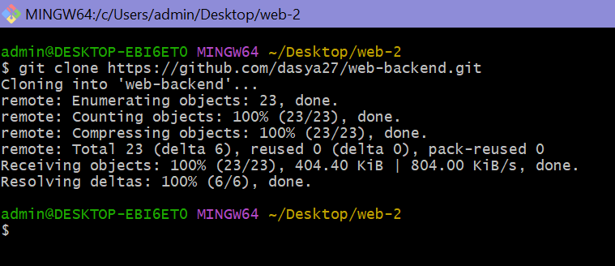
2. Добавляем необходимые файлы
3. Проверяем статус
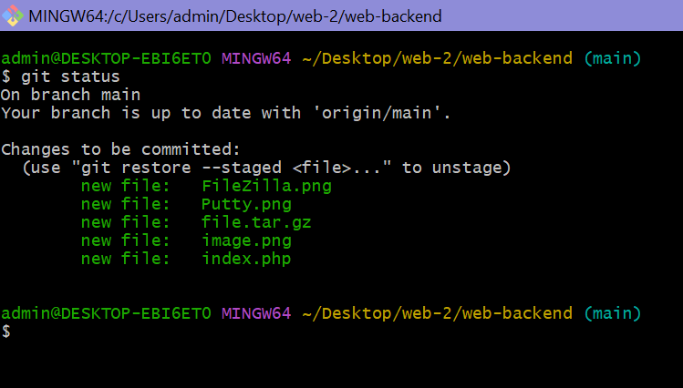
Эта команда показывает, какие изменения произошли
4. Фиксируем изменения с git add
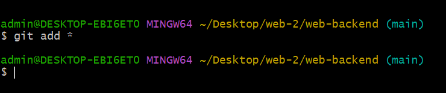
8. Проверка работы index.php
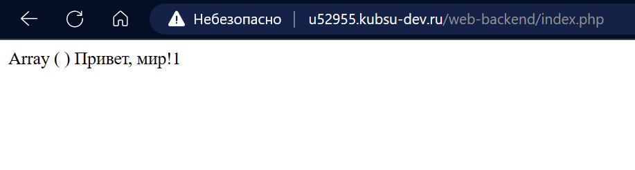
HTTP - запросы
Соединяемся с сервером при помощи telnet ( указываем IP - адрес и порт )
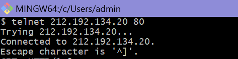
Соединение прошло успешно
Сами запросы лучше сначала записать в текстовый файл, а потом копировать оттуда, так
как можно не успеть записать.
1. Получение главной страницы, используем метод GET
в протоколе HTTP 1.0
HTTP 1.1 имеет обязятельный заголовок хоста
HTTP 1.0 не требудет заголовок хоста
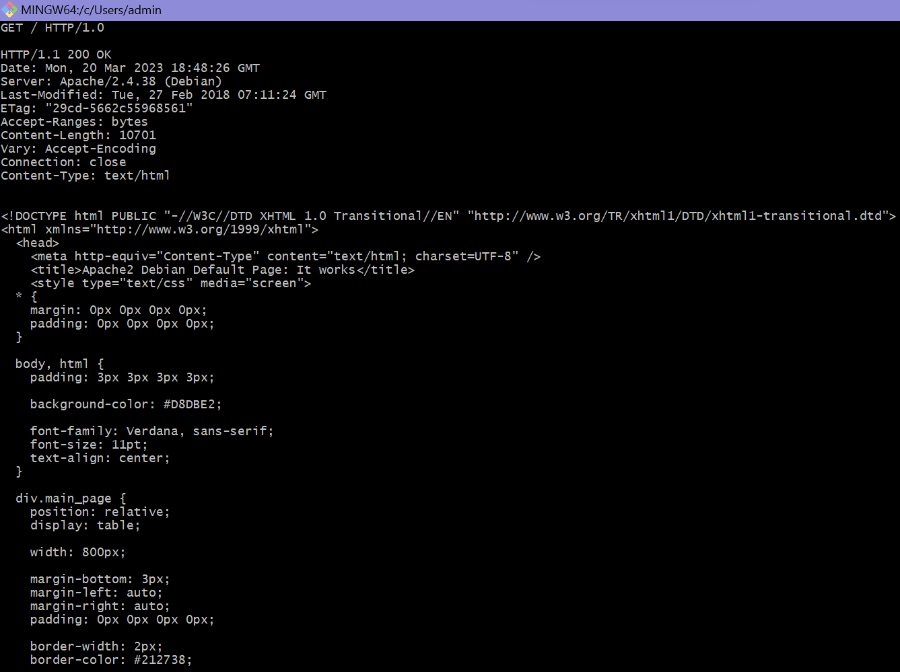
2. Получение внутренней страницы, используем метод GET в протоколе HTTP 1.1
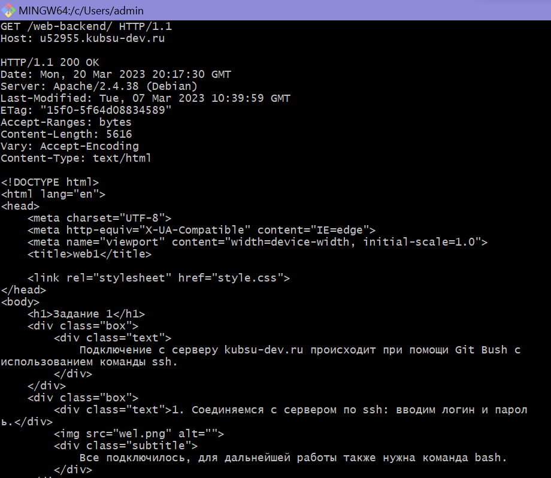
3. Определение размера файла file.tar.gz без скачивания
Используем метод HEAD. Этот метод аналогичен методу GET, но не возвращает тело ответа
, только метаданные.
Итоговый размер файла: 11335 байт
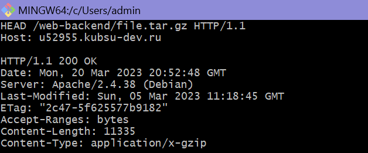
4. Определение медиатипа ресурса image.png, используем метод HEAD
Медиатип - это специальная текстовая метка, которая прикрепляется к объекту и описывает тип этого объекта
Полученный медиатип: image/png
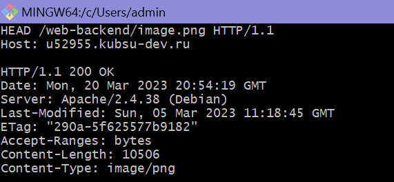
5. Отправление комментария на сервер по адресу index.php, используем метод POST
Метод POSTпозволяет оправлять данные на сервер.
С помощью Content type указываем тип отправляемых данных. В простом запросе используется такая, как тут.
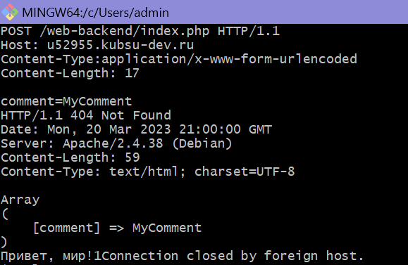
6. Получение первых 100 байт файла file.tar.gz
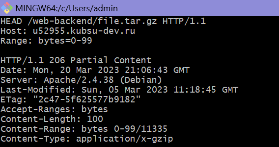
7. Определение кодировки index.php, используем метод HEAD
Кодировка ресурса: charset = UTF-8
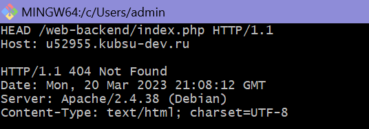